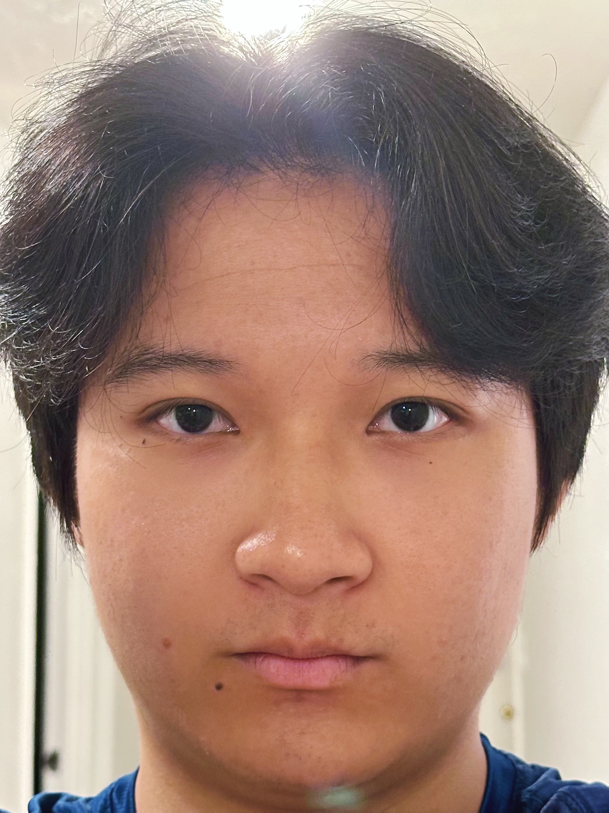

Exploring how focal length, perspective, and the dolly zoom affect what we see.
Selfie: The Wrong Way vs. the Right Way
Focal length & facial distortion
The following are two selfies taken at different focal length, while keeping the portion of face in the picture identical. It is apparent that in the one with short focal length the face is distorted. This is because with short focal length, the camera can capture wider range of scenery, and compress the scene within one image. However, the wide range scenery usually involves large distance difference between different items. For example, the nose is much more closer to the camera than the hair. The closer the items, the larger it appears in the image. So the one with short focal length will distort the face with nose being magnified and the surrounding of the face being shrunk.

24mm @ 50 cm — noticeable distortion
13mm @ 15 cm — strong wide‑angle distortion
Architectural Perspective Compression
Long vs. short focal lengths on streetscapes
It is shown in the following two set of images that filming a street using long focal length will compress the street, while usingshort focal length the depth perceptive of the street will be better expressed. This is because that within an image captured by long focal length, the distange of items in the image to the camera varies less significant in terms of percentage compared with that of short focal length, leading to their size be equally distributed.
77mm — compressed perspective
13mm — accentuated depth
77mm — similar object sizes
24mm — stronger depth cues
The Dolly Zoom
Move back while zooming in to keep subject size constant
The dolly zoom keeps the subject’s on‑screen size fixed by simultaneously changing camera position (dolly) and focal length (zoom). As the background scale changes relative to the subject, the space feels to stretch or compress — a striking cinematic effect.